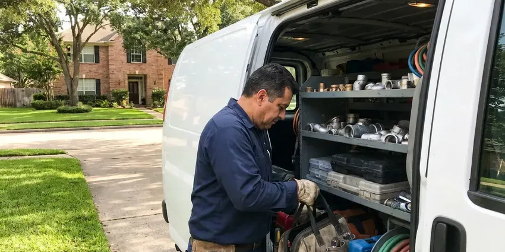

Clogged Drain Repair in Somersworth, NH
Tub draining slower every week in Somersworth, NH? That is hair and soap. We pull it out and get it running at full speed.
- Licensed Technicians
- Every Drain Tested Before We Leave
- Camera Checks on Recurring Clogs
- Same-Day Drain Clearing

Get the Water Moving Again in Somersworth, NH
We clear it mechanically, test it with running water and tell you what caused it.
Clogged Drain Repair That Finds the Cause in Somersworth, NH
FVR Plumbing runs a camera when a drain clogs twice in a month. There is always a cause. It might be a belly in the pipe that holds water, a broken fitting, heavy scale or a root that found a crack in an old joint, and seeing it on screen beats guessing at the next clog.
Work we handle every week:
- Toilet clearing with a toilet auger
- Floor drain, garage drain and trap primer work
- Laundry standpipe and branch line clearing

Additional Plumbing Maintenance Services in Somersworth, NH
Our maintenance and specialty plumbing services in Somersworth, NH protect your home year-round and extend the life of every system.


Customers
Why Choose FVR Plumbing for Clogged Drain Repair in Somersworth, NH?
A drain that clogs again a week later costs you twice. We aim for once. That means running the cable the full length of the line, flushing with plenty of hot water and watching the drain carry it without backing up.
- Camera When Needed, Recurring clogs get a camera inspection so we can show you what is behind them.
- Straight Pricing, The price is set before the cable comes out.
- Water Tested, Every drain gets a flow test before we pack up.
Citywide Coverage
No matter where you live in Somersworth, same-day service is the norm. Saturdays and Sundays included. We schedule by area, so drive times stay short across town.
Experienced Team
Our technicians clear hundreds of drains a year. They can feel the clog. An experienced tech can tell grease from hair from roots by how the cable bites, which helps them pick the right head or switch to a jetter before wasting time on the wrong approach.
Safety-First Approach
Cleanouts on older lines can be rusted shut. We open them carefully. We use the right wrench and penetrating oil, and if a cap breaks we replace it with a new threaded plug before leaving so the line stays sealed.
Trusted Certified Somersworth Plumbing Services Professionals
At FVR Plumbing, we are proud to offer certified plumbing services throughout Somersworth, NH. Credentials matter in this trade. Our plumbers hold recognized industry credentials, and they follow strict safety and quality rules on every repair, installation and maintenance call we run.
Call Us Now PHCC Plumbing Contractor Recognition
PHCC Plumbing Contractor Recognition Better Business Bureau (BBB) Accreditation
Better Business Bureau (BBB) Accreditation Angi Certified Pro
Angi Certified Pro ISO 9001 Quality Management Certification
ISO 9001 Quality Management CertificationDrain Clogs We Clear All the Time in Somersworth, NH
Commercial Drain Clog Clearing in Somersworth, NH
Restaurants, salons and offices run their drains hard. Downtime costs money. We clear grease-heavy kitchen lines, hair-clogged salon sinks, mop sinks and restroom drains, and we can work early or late so the job does not interrupt your customers. Jetting schedules are available.

Bathroom Sink & Shower Clog Repair in Somersworth, NH
Shower drains slow down a little each week as hair collects on the crossbars. Then they stop. We pull the strainer, hook the hair out with a drum auger made for small drains and run the cable through the trap to clear what has moved further down. We can fit a hair screen for you.
Outdoor Drain & Storm Drain Clearing in Somersworth, NH
Patio drains, driveway trench drains and downspout lines fill with leaves, grit and mud. Nor'easters and tropical storm remnants can bring intense rain that overwhelms drainage and floods low-lying areas. Then water heads for the foundation. We clear the grate and the pipe behind it with a cable or jetter, flush the line to its outlet and check that the outlet itself is not buried under mulch or soil. Clear outlets matter.
Drain Cleaning & Maintenance in Somersworth, NH
Regular cleaning keeps a drain from building up to the point of a full clog. Kitchen lines benefit the most. A large share of homes rely on private wells, and some wells carry naturally occurring arsenic, radon or iron that call for treatment. We set the schedule by how fast each line builds up, which might be once a year for a quiet household and every few months for a busy one, and we note on each visit how much came out.
Floor Drain and Garage Drain Clearing in Somersworth
Floor drains in garages, utility rooms and basements collect sand, dirt and debris. A dry trap lets sewer gas in. We clear the drain and the line behind it, refill the trap and install a trap seal if it rarely gets water. Bad smell, dry trap.
Garbage Disposal and Kitchen Line Clogs in Somersworth
A disposal grinds food but does not make it disappear. It all ends up in the pipe. Potato peels, rice, pasta and coffee grounds turn to paste and settle in the horizontal run behind the cabinet, so we clear the disposal outlet, the trap and the wall line together because a clog in one usually means buildup in all three. Jammed impellers get freed.
Main Sewer Line Clog Repair in Somersworth
When the toilet gurgles as the washer drains, the main line is usually the problem. Every fixture empties into it. We go in through the outside cleanout with a large sectional cable, then camera the line if the backup returns to check for roots or a sag. Hydro jetting handles the worst of it.

Preventative Drain Maintenance in Somersworth
Drains that clog once a year can be cleaned once a year instead. It saves you the emergency. FVR Plumbing sets up maintenance visits that cable or jet your problem lines, usually the kitchen line and the main, before buildup gets thick enough to stop the flow. Enzyme treatments between visits can help.
Clogged Drain Repair Near Me in Somersworth, NH
Being local means we come back. The same person handles follow-ups. If a drain we cleared clogs again within the guarantee period, we come back free or apply the cost toward fixing the cause.
Nights and weekends, a nearby tech makes the difference. We take calls after hours. With vans spread around Somersworth, an emergency backup on a Sunday can usually be cleared the same evening instead of waiting until Monday morning.
FVR Plumbing at a Glance
- Licensed and insured plumbers serving Somersworth, NH
- Same-day appointments and 24/7 emergency response
- Upfront, flat-rate pricing before work begins
- 4.9-star rated by 840+ New Hampshire customers
Somersworth Map
Somersworth Information
- Population
- 12,192
- Area codes
- Local
- Service area
- Somersworth and communities within 40 miles
- Nearby
- Dover, Rochester, Durham, Portsmouth
A large share of homes rely on private wells, and some wells carry naturally occurring arsenic, radon or iron that call for treatment. Rough cast iron and scaled pipe catch debris faster than smooth new pipe, so drains in older Somersworth, NH homes need a cable that reaches the full run.
Expert Services
Reach out to FVR Plumbing for reliable plumbing work done by licensed pros in Somersworth, NH.
Our Specialized Plumbing Services in Somersworth, NH
At FVR Plumbing, you get every kind of plumbing service from one company across Somersworth, NH. We go from leak detection all the way to full system installations, for homes and commercial buildings, and we do it quickly at a fair price. Take a look at our core services below:


What to Expect When We Clear a Drain in Somersworth, NH
The steps are plain so you know the price and the plan before any cable goes in.
Describe the Problem
Call (844) 442-1569 and tell us which drain is clogged and how long it has been slow. You get a price range on the phone.
Clear the Clog
Your technician protects the area and clears the line. Running water confirms the fix.
Prevent the Next One
We explain the cause and what to change. A camera inspection is suggested only if the clog keeps returning.
Frequently Asked Questions About Clogged Drain Repair in Somersworth
Most clogs cleared with a cable or auger cost $150 to $500. Bigger jobs cost more. Main sewer blockages that need jetting, or a repair dug from the yard because the pipe itself has failed, can run from $500 to $2,000 or more. We give you the number before starting.
Yes, evenings and weekends too. We answer after hours. When you call, we give you the next available arrival time along with any after-hours rate so there are no surprises on the bill. Most weekend calls get same-day service.
Sometimes, yes. Plungers handle simple ones. A hand-held hair snake can clear a lot of tub and sink clogs, though repeat clogs or multiple slow drains need a pro. Forcing a cable can crack old pipe.
Hydro jetting sends water at very high pressure through a nozzle that scrubs the pipe wall. It cleans, not just opens. We use it on lines with heavy grease, thick mineral scale or soft roots that a cable would only punch through and leave behind on the pipe walls. We check pipe condition first.
Almost never. Existing access is enough. Drains get cleared through the fixture, the trap, a cleanout or the roof vent, and a wall only gets opened when a pipe inside it is broken and has to be replaced. We tell you first.
Yes, a limited workmanship guarantee. It covers a set period. If the same drain clogs again within that time, we come back at no charge or apply what you paid toward a repair of the underlying problem. Details are on the invoice.
Call when a plunger does not work. Odors are a sign too. Water backing up into other fixtures, or multiple slow drains usually mean a main line issue. Those need a bigger machine.
Under two hours for most household clogs. Often under one. Severe blockages in the main that need a camera and jetting might stretch longer when access is tricky. We tell you up front if a job will run long.
What People Are Saying About Our Plumbing Experts?

Robert G.
The camera showed a full break in our clay sewer line near the street. FVR Plumbing replaced it with a trenchless pipe burst, so the only digging was two small pits in the yard. They let us watch the footage before and after.
Sewer Line Replacement · Exeter, NH
Brian W.
I smelled gas behind the dryer and called right away. The plumber found a corroded flex connector, replaced it, and pressure tested the whole line before turning the gas back on. He let me watch the gauge hold steady for fifteen minutes.
Gas Line Repair · Rochester, NH
Laura S.
Our 40 gallon tank started leaking from the bottom after thirteen years. The tech hauled the old one out, set a new unit with a fresh expansion tank, and had hot water running in about four hours. He took the old tank with him too.
Water Heater Replacement · Exeter, NH
Megan L.
Our upstairs tub drained so slowly that every shower turned into a bath. FVR Plumbing pulled a wad of hair out of the stopper and then snaked the line past the trap. Three months later it still drains fast.
Drain Cleaning · Somersworth, NHKevin O.
Before buying our house I paid for a sewer camera inspection. FVR Plumbing found a belly in the line that held standing water about forty feet from the cleanout. We used the video to get the sellers to fix it before closing.
Sewer Camera Inspection · Dover, NH
Karen W.
After our third pinhole leak in copper, we stopped patching. FVR Plumbing gave us a written plan room by room and repiped the house in PEX while we stayed in it. The crew covered our floors every morning and cleaned up every night.
Repiping · Derry, NH